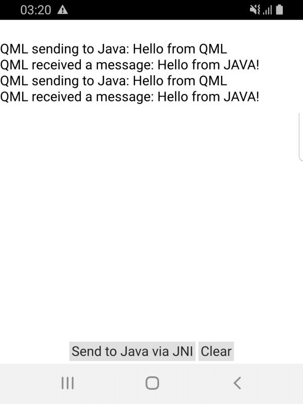

Qt JNI Messenger
Demonstrates communication between Java code and QML or C++ using NJI calls.

This example demonstrates how to add a custom Java class to an Android application, and how to both call it from C++ and call C++ functions from Java using the JNI convenience APIs in the Qt Android Extras module. The application UI is created by using Qt Quick.
When clicking the send button, a message will be sent from QML to Java class though the C++ class and a log of that is shown in the screen view. Logs also can be seen from the Android logcat of the messages being exchanged, which would be similar to:
I System.out: This is printed from JAVA, message is: QML sending to Java: Hello from QML D libjnimessenger_armeabi-v7a.so: qml: QML received a message: Hello from JAVA!
Running the Example
To run the example from Qt Creator, open the Welcome mode and select the example from Examples. For more information, visit Building and Running an Example.
Calling Java Methods from C++ Code
We define a custom Java class called JniMessenger in the JniMessenger.java file:
package org.qtproject.example.jnimessenger;
public class JniMessenger
{
private static native void callFromJava(String message);
public JniMessenger() {}
public static void printFromJava(String message)
{
System.out.println("This is printed from JAVA, message is: " + message);
callFromJava("Hello from JAVA!");
}
}
Note: The custom Java class can extend other classes like QtActivity, Activity or any other Java class.
In the jnimessenger.cpp file, we call the function printFromJava(String message) by first creating a QAndroidJniObject for the Java String that we want to send and then invoking a JNI call with callStaticMethod<>() while providing the method signature:
void JniMessenger::printFromJava(const QString &message) { QAndroidJniObject javaMessage = QAndroidJniObject::fromString(message); QAndroidJniObject::callStaticMethod<void>("org/qtproject/example/jnimessenger/JniMessenger", "printFromJava", "(Ljava/lang/String;)V", javaMessage.object<jstring>()); }
That call will then execute the following from Java side, which would print the message to the System.output.
public static void printFromJava(String message)
{
System.out.println("This is printed from JAVA, message is: " + message);
Calling QML/C++ Functions from Java Code
Directly after that, our native function callFromJava(String message) will be called, which would be then handled from C++ side. Note, that this method has to be defined as native at the top of the Java class as:
private static native void callFromJava(String message);
To be able to call C++ functions from Java, in our C++ class JniMessenger.cpp, we need to define those functions using RegisterNatives() as follows:
JNINativeMethod methods[] {{"callFromJava", "(Ljava/lang/String;)V", reinterpret_cast<void *>(callFromJava)}};
(See Java Native Methods for more details).
We would need to register the functions' signatures in methods[], which have the name in Java class, then its parameters and return types, then the function pointer in the C++ code.
JNINativeMethod methods[] {{"callFromJava", "(Ljava/lang/String;)V", reinterpret_cast<void *>(callFromJava)}};
This would insure that our C++ function is available from within the Java call. Now, that function could simply print the message it received from Java to the debug log, but we want to forward the received message to the QML components so that it gets displayed in our text view, so we get:
static void callFromJava(JNIEnv *env, jobject /*thiz*/, jstring value) { emit JniMessenger::instance()->messageFromJava(env->GetStringUTFChars(value, nullptr)); }
Now, we need to implement the necessary Connections in the QML code to receive the message from C++, which we would print into the Text view with the id messengerLog:
Connections {
target: JniMessenger
function onMessageFromJava(message) {
var output = qsTr("QML received a message: %1").arg(message)
print(output)
messengerLog.text += "\n" + output
}
}
See also Qt for Android and Qt Android Extras.